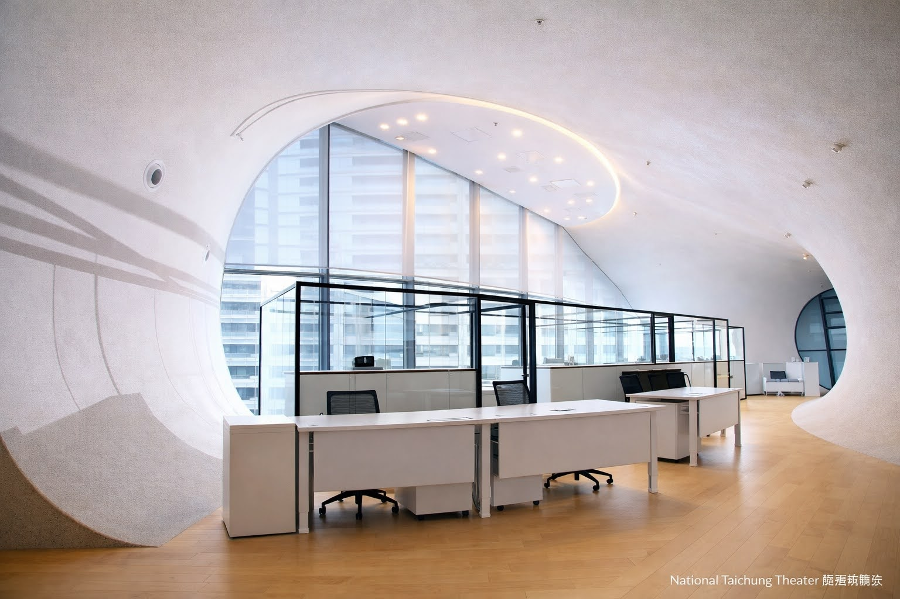
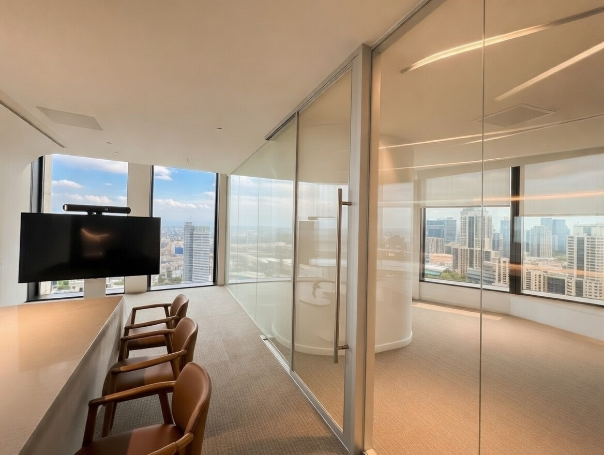
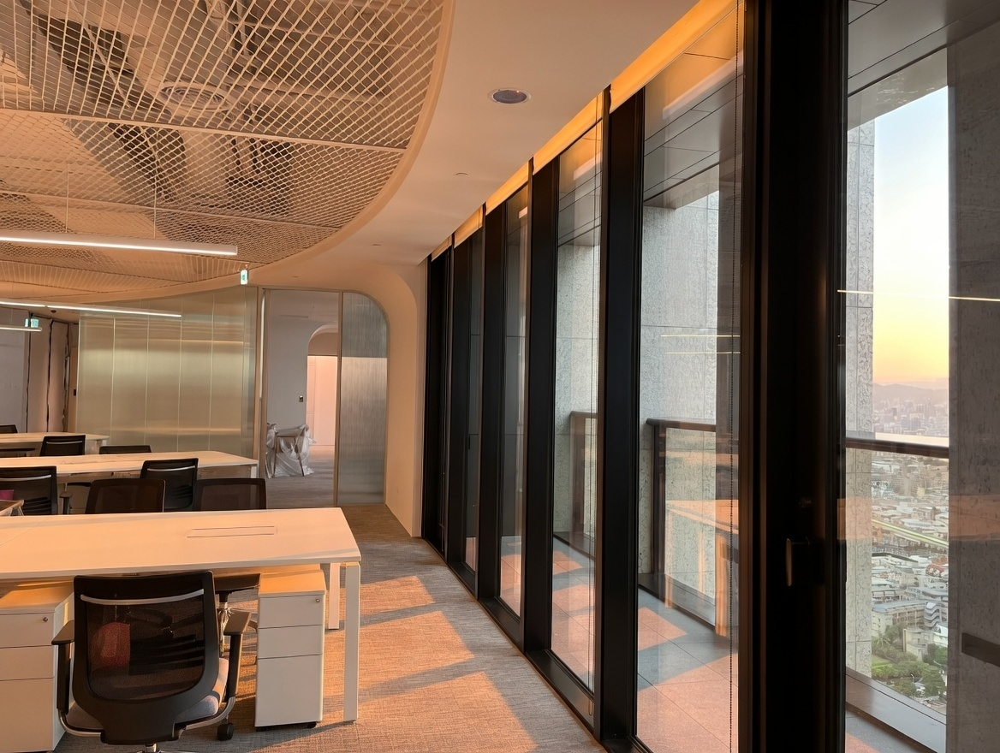
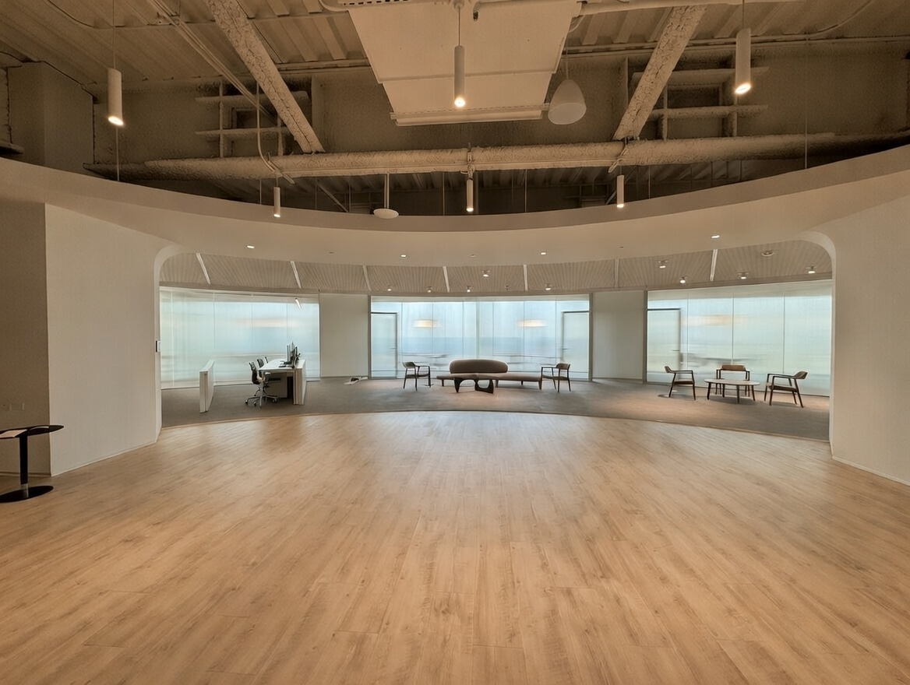
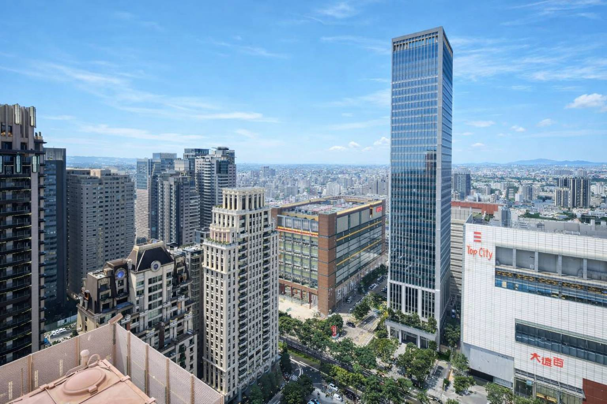

<style>
  /* Taichung Financial project: embeddable article version (scoped) */
  .beauty-embed {
    --ink: #1f2937;
    --muted: #4b5563;
    --line: #dbe2ea;
    --brand: #1e3a8a;
    --brand-soft: #e8efff;

    color: var(--ink);
    font-family: -apple-system, BlinkMacSystemFont, "Segoe UI", Roboto,
      "Noto Sans TC", "PingFang TC", "Microsoft JhengHei", Arial, sans-serif;
    line-height: 1.85;
    font-size: 16px;
    max-width: 900px;
    margin: 0 auto;
    padding: 10px 4px 32px;
    word-break: break-word;
  }

  .beauty-embed * { box-sizing: border-box; }

  .beauty-embed .hero {
    border: 1px solid var(--line);
    border-radius: 16px;
    overflow: hidden;
    background: #fff;
    box-shadow: 0 10px 28px rgba(2, 6, 23, 0.08);
    margin-bottom: 20px;
  }

  .beauty-embed .hero-media img {
    width: 100%;
    height: auto;
    display: block;
  }

  .beauty-embed .hero-body {
    padding: 20px;
    background: linear-gradient(135deg, #0f172a 0%, #1e3a8a 100%);
    color: #fff;
  }

  .beauty-embed .kicker {
    display: inline-block;
    font-size: 12px;
    letter-spacing: 1.2px;
    text-transform: uppercase;
    color: #bfdbfe;
    border: 1px solid rgba(191, 219, 254, 0.5);
    border-radius: 999px;
    padding: 4px 10px;
    margin-bottom: 10px;
  }

  .beauty-embed h2 {
    margin: 0 0 10px;
    font-size: 30px;
    line-height: 1.3;
    color: #fff;
  }

  .beauty-embed .hero-body p {
    margin: 0;
    color: rgba(255, 255, 255, 0.92);
  }

  .beauty-embed .panel {
    border: 1px solid var(--line);
    border-radius: 14px;
    background: #fff;
    padding: 18px;
    margin: 14px 0;
  }

  .beauty-embed .panel h3 {
    margin: 0 0 8px;
    font-size: 24px;
    line-height: 1.4;
    color: #111827;
  }

  .beauty-embed .panel p {
    margin: 0;
    color: var(--muted);
  }

  .beauty-embed .highlights {
    margin-top: 16px;
    display: grid;
    grid-template-columns: repeat(2, minmax(0, 1fr));
    gap: 12px;
  }

  .beauty-embed .card {
    border: 1px solid var(--line);
    border-radius: 14px;
    overflow: hidden;
    background: #fff;
  }

  .beauty-embed .card img {
    width: 100%;
    height: 180px;
    object-fit: cover;
    display: block;
  }

  .beauty-embed .card .content {
    padding: 12px;
  }

  .beauty-embed .card h4 {
    margin: 0 0 6px;
    font-size: 18px;
    line-height: 1.35;
    color: #111827;
  }

  .beauty-embed .card p {
    margin: 0;
    font-size: 14px;
    color: var(--muted);
    line-height: 1.65;
  }

  .beauty-embed .meta {
    margin-top: 16px;
    border: 1px solid var(--line);
    border-radius: 14px;
    background: var(--brand-soft);
    padding: 14px;
  }

  .beauty-embed .meta-grid {
    display: grid;
    grid-template-columns: repeat(3, minmax(0, 1fr));
    gap: 10px;
  }

  .beauty-embed .meta-item {
    border: 1px solid #cfe0ff;
    border-radius: 10px;
    background: #fff;
    padding: 10px;
  }

  .beauty-embed .meta-item .label {
    font-size: 12px;
    color: #64748b;
    margin-bottom: 4px;
  }

  .beauty-embed .meta-item .value {
    font-size: 16px;
    color: #0f172a;
    font-weight: 700;
  }

  @media (max-width: 760px) {
    .beauty-embed h2 { font-size: 24px; }
    .beauty-embed .highlights { grid-template-columns: 1fr; }
    .beauty-embed .meta-grid { grid-template-columns: 1fr; }
  }
</style>

<section class="beauty-embed" aria-label="台中七期證券公司專案可嵌入版本">
  <article class="hero">
    <div class="hero-media">
      
    </div>
    <div class="hero-body">
      <span class="kicker">Commercial Design</span>
      <h2>台中七期證券公司：定義金融美學</h2>
      <p>打破傳統金融空間框架，打造兼具信任感、藝術感與高效率的服務場域。</p>
    </div>
  </article>

  <section class="panel">
    <h3>品牌轉型的美學實踐</h3>
    <p>
      台中七期證券公司（前身為大慶證券）在品牌轉型過程中，致力於重新定義人與金融的關係。
      設計團隊將品牌價值轉化為可觸碰、可感知的空間語彙，透過留白、材質與隔音策略配置，
      讓專業感與親和力同時成立。
    </p>
  </section>

  <section class="highlights">
    <article class="card">
      
      <div class="content">
        <h4>藝術中心氛圍</h4>
        <p>以純淨白色與大面積留白展現層次，讓空間維持沉穩且舒適的第一印象。</p>
      </div>
    </article>

    <article class="card">
      
      <div class="content">
        <h4>光影景觀融合</h4>
        <p>大面積落地窗引入七期都市天際線，讓空間在不同時段展現自然節奏。</p>
      </div>
    </article>

    <article class="card">
      
      <div class="content">
        <h4>多功能交誼場</h4>
        <p>兼容接待、交流與活動使用，讓商務互動有更高彈性與更好的停留體驗。</p>
      </div>
    </article>

    <article class="card">
      
      <div class="content">
        <h4>七期天際景觀</h4>
        <p>將台中七期地標天際線納入主要視野，放大空間尺度感，也強化決策情境的專業氛圍。</p>
      </div>
    </article>
  </section>

  <section class="meta" aria-label="專案資訊">
    <div class="meta-grid">
      <div class="meta-item">
        <div class="label">專案名稱</div>
        <div class="value">台中七期證券公司</div>
      </div>
      <div class="meta-item">
        <div class="label">空間類型</div>
        <div class="value">金融辦公 / 商務空間</div>
      </div>
      <div class="meta-item">
        <div class="label">設計地點</div>
        <div class="value">台中七期</div>
      </div>
    </div>
  </section>
</section>
